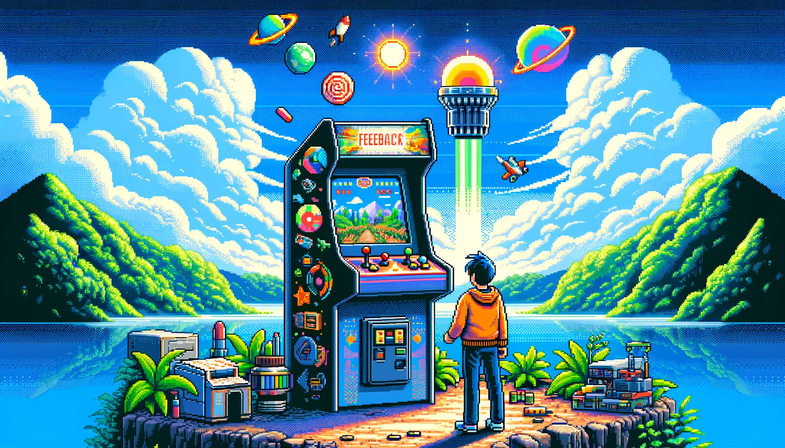
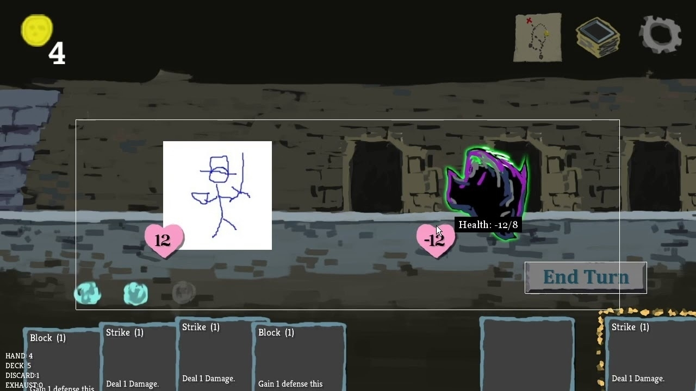

Use This Simple Technique To Generate Gameplay Ideas Fast

The Problem
Have you ever tried to make a game about a theme like love?
It sounds simple, right?
But when you sit down to design it, you might find yourself stuck.
Where do you even start? There are so many ways to approach this theme. It’s like standing at a crossroads with hundreds of paths.
You could go in any direction, but how do you know which one is right?
This is a big challenge for game designers, both newbies and pros. It’s easy to get lost in the sea of ideas and end up not starting at all.
Why It Matters
Why is solving this problem important?
Well, having a clear process to turn any theme into a game concept is key. It helps you move faster in developing your game.
You waste less time thinking and more time actually creating. Plus, you start to get a feel for what ideas will work and what won’t right from the start.
Personal Experience
I’ve been there, stuck in the idea phase.
Once, during a game jam, I spent half of the 48 hours trying to decide on an idea.
When I finally picked one, I hardly had any time left to make the game. And I wasn’t alone in this struggle. After reading other developers’ logs, I knew we needed a better way.
Verb Before Consequence
The solution is simple: “Verb Before Consequence”, or V.B.C.
This means you think of a gameplay idea as something the player must do (the verb) before something else happens (the consequence).
For example:
“Rescue the princess BEFORE the dragon eats her.”
“Stop the love of your life at the airport BEFORE they hop on a plane and leave forever.”
“Clean the whole house BEFORE your parents get home.”
These ideas have a few key things:
Drama: There’s a clear consequence and a ticking clock.
Interactivity: The player has a task they must do.
Clarity: You understand what the game is about.
Objections
Some might say this method is too simple to create a good game. But simplicity is powerful. The best games often have straightforward, engaging concepts.
For example:
Chess: Checkmate your opponent BEFORE they checkmate you
Super Mario Bros.: “Reach the end of the level BEFORE time runs out
Capture The Flag: Take the other team’s flag back to your base BEFORE they take yours
Basketball / Football / Soccer: Score the most amount of points BEFORE time runs out
You can dissect plenty of games and mechanics using this lens.
How to use the V.B.C. Technique
Whenever you need to come up with a gameplay concept, fill in the blanks, “Do (Verb) BEFORE (Consequence).”
Boom! You’ve got a solid concept to start designing your game.
By using this V.B.C. method, you’ll find yourself moving from idea to game development much faster.
It’s a straightforward, effective tool to unlock endless creative possibilities.
So, next time you’re stuck, remember: Verb Before Consequence.
Happy game designing!
Ask This One Question To Make Game Design 10x Easier

You know how tricky and complex game design can be.
In this journey filled with endless tasks and challenges, it’s easy to lose focus. But there’s one simple question that can make your life as a game designer much easier.
What’s the Big Question?
Here’s the most important question you should always ask:
“What problem are we trying to solve?”
Sounds simple, right?
But it’s often overlooked even with experienced developers. When you’re deep in game development, it’s easy to get lost in the details and forget the main goal.
Albert Einstein said, “If I were given one hour to save the planet, I would spend 59 minutes defining the problem and one minute resolving it.”
This quote highlights how crucial it is to know the problem before you jump into solutions.
Why This Question Matters
Game development is a journey filled with distractions.
As a game designer, your job is to solve problems for the player. But remember, not every problem needs solving.
It’s important to focus on the right ones. Asking “What problem are we solving?” brings clarity and focus.
The Benefits of Asking the Right Question
Productivity: If you understand the problem, you can work more efficiently.
Alignment: It ensures everyone on the team is on the same page. This minimizes miscommunication and conflicts.
Time-saving: It saves hours of work. You don’t waste time on solving the wrong problems.
Why People Avoid Asking This Question
Some might think it’s a rude question, or fear it might get annoying if asked too often.
But the truth is, it’s a necessary step in effective problem-solving.
Personal Experience
I’ve been in design meetings where we debated solutions for hours! It never occurred to us that we didn’t even agree on the problem.
We spent hours in discussions and left with no clear direction. We could have avoided this by asking, “What problem are we solving?”
A Simple Framework
Agree on the Problem: Always ensure everyone agrees on the problem.
Clear Goal: At the start of meetings, state the problem you’re there to solve.
Self-Reflection: If you’re on your own, ask yourself if you’re solving the right problem. Is it a problem worth solving to begin with?
Conclusion
In game development, it’s easy to get caught up in endless tasks.
By asking, “What problem are we solving?” you bring clarity and focus to your work.
This simple question is a powerful tool in your game design toolkit. Use it wisely, and watch your productivity and efficiency soar!
Receiving feedback made easy:
- Assume positive intent.
- Appreciate all feedback. Say thank you even if you don’t agree.
- Accept or discard, but always consider it deeply.
This simple process elevates your creations and builds collaborative relationships.
The #1 Skill in Game Design: Mastering Feedback

What’s the Big Deal with Feedback?
When you’re crafting a video game, it’s like you’re in a bubble.
You think your game is awesome, but will others feel the same?
The truth is, you can’t know if your game is a hit or a miss until players get their hands on it. That’s where feedback comes in, and trust me on this, it’s a game-changer!
Why Feedback is Your Superpower
Imagine feedback as a power tool in your game design toolbox. It’s not just about listening to what others say about your game. It’s about how you listen.
Taking feedback the right way can turn your good game into a legendary one. It will also improve your relationship with players and coworkers!
Ego, Be Gone!
First things first, you’ve got to ditch the ego. I’m serious.
Remember, your game isn’t about you ‚Äì it’s for the players. When someone gives you feedback, they’re helping you, not attacking you.
Appreciation is key here.
Even if you don’t agree with what they’re saying, say thanks. It shows you value their opinion. They will be more likely to come to you again with feedback.
The Truth About Feedback
Here’s a secret: when someone tells you there’s a problem with your game, they’re usually right.
But if they give you a solution, be cautious. That’s your job to figure out.
Either way, be grateful you’re getting feedback. If someone’s not giving you feedback after you ask, it might mean they don’t believe you’ll receive it well. Yikes!
You want play testers to always feel comfortable being honest with you. That’s your responsibility.
Why Feedback Rocks
Learning to love feedback can do wonders.
The more feedback you get, the more you learn, and the better your game becomes.
It’s like having a secret weapon that keeps making your game cooler and cooler. Designers who know how to receive feedback will always produce a better game than those who don’t.
Common Worries About Feedback
Some people worry that showing their game too early might give a bad impression. Or worse, someone might steal their idea!
And sometimes, the feedback feels just… wrong. Like the player doesn’t ‘get’ your game. Or they’ll just tell you what you already know.
These are real worries, but don’t let them stop you from seeking it out anyway. The value you get from a good feedback process outweighs any of the costs.
It’s never too early to get feedback.
Look at how Slay the Spire looked when their designers started requesting feedback.

That game went on to become a smash hit!
My Story with Feedback
I didn’t always take feedback well.
In the beginning, I would get defensive or justify my design. I would blame the person for not “getting” my design.
This held me back as a game designer.
But when I started embracing feedback, everything changed. I went from a so-so designer to one of the best on my team! I got promotions and more opportunities within the studio.
People enjoyed working with me because I was open to their ideas. They felt comfortable coming to me with problems and I loved hearing their feedback.
It wasn’t always easy, but it was always worth it.
Feedback Made Easy: A Two-Step Process
Ready to become a feedback expert? Here’s how:
Appreciate the Feedback: Say thanks, even if you don’t agree. It shows gratitude and encourages the other person to come back with more.
Accept or Discard: You decide if the feedback works for your game. Give the feedback honest consideration before making a decision. (Pssst, you can keep this part a secret.)
The Bottom Line
Feedback isn’t just about making your game better. It’s about being a better designer, a better team player, and building trust with players.
When someone offers you feedback, remember, it’s not just advice. It’s your ticket to being a great game designer! üåüüéÆüëæ
Here is the key to compelling games!
It’s not just about mastering design techniques. Observe the behavior and emotions you enjoy in your favorite experiences.
How can you get the player to feel those too?
The Game Dev Practice That Changed Everything

I owe my entire game development career to a single practice: Learning to make games in 2 hours.
Why it matters:
- We’re all busy, and it’s hard to find time to make games
- The problem is you need to make a lot of games to build the skills necessary to make game development a lifelong career
There is no way around this. The experience gets you to where you want to go.
‚ÄúYou make good work by (among other things) making lots of work that isn’t very good, and gradually weeding out the parts that aren’t good, the parts that aren’t yours. It’s called feedback, and it’s the most direct route to learning about your own vision. It’s also called doing your work. After all, someone has to do your work, and you’re the closest person around.‚Äù - David Bayles.
Solution: The two-hour game jam is the best practice to develop and keep your skills sharp and growing. It will:
- Help you develop your unique style and voice
- Teach you how to wield your tools efficiently
- Show you how to scope, finish, and ship
- Force you to value process over outcome
- And so much more…
None of this is new. People have been making games in a short time frame for a long time. Vlambeer, a successful independent game studio, was created by game jam culture. Jan Willem Nijman would regularly participate in 3-hour game jams. He even once made a game in 16 minutes.
That’s when I realized that design experience isn’t in the size of your games, or even in the scope of it - it’s in the number of projects you’ve been through. - Rami Ismail
The game developer who has made a hundred small games has a massive advantage over the designer who’s only ever worked on one big game.
The big benefit: This is a sustainable practice. Because the time commitment is so low, you can do this even if you have the busiest schedules. I’ve maintained this practice even while caring for a newborn, helping launch a AAA game, and spooling up a new workout routine.
No matter how busy life gets, I can still crank out a game in 2 hours.
The best part is you don’t need to do the 2 hours all at once! I tend to split up my 2-hour game jam into four 30-minute sessions.
If you have 30 minutes every other day of the week, you can make games and improve your skills.
By consistently practicing the 2-hour game jam, I’ve been able to:
- Break into the game industry
- Learn a bunch of different game engines and techniques
- Get thousands of people to play my games on itch.io
- Create over 100 games
- Design innovative features for large teams and game studios
Lastly, it’s just straight-up fun! If you commit to the practice, I guarantee you will have fun.
How to get started in 4 easy steps
Step 1. Make a game a week for one month
- Every Monday, commit to creating a new game
- Work on your game for 30 minutes every other day. Or all at once. The choice is yours.
- Remember! You only get two hours!
Step 2. Ship it or Kill it
- When two hours are up, your game should be finished.
- Decide whether to ship the game or delete it forever.
This part is crucial! You’ve made a game, and now it’s time to put it in players‚Äô hands so that they can play it. If you can’t bring yourself to share your game, you must delete the game. Permanently.
This teaches you a couple of things:
- Games are meant to be played by other people
- Delete your game so you’re not tempted to “delay” or keep working on it
- Don’t get attached to your work
However, go for it if you want to capture a screenshot or video before deleting your game.
A common objection: “But what if I want to keep working on it because I like what I built and it has potential?”
It took two hours to make the game. Delete it and start over. If you can’t get yourself to do that, the game may not be worth pursuing.
Step 3. Process over outcome
The 2-hour game jam is a practice. You don’t go to the gym once and suddenly become fit.
- Don’t worry about how the game turned out
- Don’t worry if the game is good or bad
- Don’t worry about if you feel like it’s a waste of time
This practice will build on itself, given enough reps and time.
Repetition. Repetition. Repetition. This is how you get better. This is how you make games for a lifetime.
üïπÔ∏è I found a manifesto about small games and I love it.
- As I get older, I crave smaller and tighter experiences when it comes to the games I want to play.
üïπÔ∏è I just found out that Rock Paper Shotgun wrote a review of one of my games (Marshmallow Nights).
This is the first review I’ve ever gotten from a website!
üïπÔ∏è I impusively signed up for a game jam
It was probably not the best idea. I have a newborn, and I’m helping the studio I work at launch its first game in the next couple of months… so time isn’t something I have a lot of.
Anyways: I decided to make a card game for the Godot Wild Jam. The theme is “Train”
- I established the data structure for shuffling and dealing out the deck of cards
- Picked the color palette for the game
- Got a basic visual representation of cards to show up on the screen
The Concept: You’re a personal trainer for trains.
- Your goal is to help them get fit by helping them shed their extra cargo
- You’ll play cards and powerups to help them lose the right amount of cargo
Next up: I gotta work on the functionality for allowing the player to play cards.

üïπÔ∏è Clarify your game design with "If-Then" thinking

Why it matters: Gameplay becomes stronger when you talk about it the same way players talk about it.
- “If you drink the potion, then you heal” (Every game ever)
- “If you rest at a bonfire, then it unlocks a checkpoint” (Dark Souls)
- “If you throw your axe, then you can press triangle to recall it” (God of War)
Pro tip: “If You” is one of the best ways to start a gameplay concept:
- “If” implies choices and possibility
- “You” puts the player at the center of the design
This method serves as a way to check how intuitive the concept is. If it’s confusing as a sentence, it will be confusing as gameplay.
Yes, but: Add a “but” at the end of the statement to introduce a twist to the concept. The Dark Souls example becomes, “If you rest at a bonfire, then it unlocks a checkpoint… But, it also respawns all the enemies in the area.”
Bottom line: Good game design starts with clear and easy-to-understand concepts.
I started working on a roguelike for the Playdate üïπÔ∏è
- I’ve always loved fantasy consoles and the constraints that come along with designing games for them


üïπÔ∏è Game Design Tip: “If the player doesn’t see it, it may not exist.”
Why it matters: If you have something in your game that the player can’t perceive, those areas may not benefit your design.
Learn more: Ep. #236 of the Game Design Round Table with designer Tanya X. Short of Kitfox Games

I wrote about this the other day, but Zach Gage put it more succinctly.

Doing nothing in games should be meaningful.
Why it matters: In game design, not pushing a button can be just as important as pushing a button. Choosing not to do something should have gameplay consequences.
For example: Say you have a treasure chest in your game that the player can destroy to earn a reward; what are some ways to reward them for not destroying it?
Maybe they could:
The bottom line: You can increase the depth of a single interaction if you consider how the player can benefit from not doing the interaction. üïπÔ∏è
üïπÔ∏è Player verbs are gameplay.
Why it matters: “But what does the player get to do?”
This is the question I have to ask after most game announcements and trailers.
The bottom line: Cinematic trailers are not gameplay. Backstory and lore are not gameplay. Beautiful graphics are not gameplay.
Signs and Feedback are the language of video games.
The player sees a sign, they provide input, and then receive feedback. Repeat. This loop is the heart of how games create a dialogue with the player.
Why it matters: Sending clear messages and feedback about the state of the game allows the player to react and make informed choices. This is a critical element to making a game more enjoyable.
The bigger picture: Creating gameplay that provides clear signs and feedback is more than just crafting a more fun experience. It’s about making a more accessible experience so that more people can enjoy games.
Deeper dive: If you’re interested in this area of game design, check out GDKey’s excellent article (5 minute read).

Game Idea: An action-shooter where your bullets become more powerful the less ammo you have. üïπÔ∏è
I can finally talk about what I’ve been working on for the last few years! Life By You is an open-world life simulation game coming to Early Access in September 2023. üïπÔ∏è

Design the game, not the player. Let the player’s choices and actions shape their own experience.
I wish more live service games would embrace this philosophy. üïπÔ∏è
Great article from design legend, Warren Spector.
TL;DR: In game dev, success comes from delivering something new and fresh. Copying others won’t cut it. Therefore, mash-up genres and give players the freedom to create their own unique experiences. That’s how you stand out. üïπÔ∏è
It’s been a relaxing break, but it’s rained quite a bit. So, we decided to go through the Sinister Six campaign. Just got to the final villain.


Got to check out a penny arcade museum at Fisherman‚Äôs Wharf in San Francisco yesterday and it was pretty awesome. However, I did see a bunch of games I used to play as a kid in the museum. So, now I feel old. üïπÔ∏è

üïπÔ∏è I’m calling it now: the GOTY will be an action-adventure game, because, if we’re honest, that’s pretty much who wins every year. #TheGameAwards

Cold. Windy. Rainy. Going to light a fire and stay in my pajamas all day. Remote work is a beautiful thing.
üïπÔ∏è A friend and I recently started working on a freeware game called Merchants of Mie and it’s been a lot of fun. However, this is my first time working on a turn-based tabletop style video game. So, I’m probably making every mistake imaginable.

‚ÄúIntroduce yourself with five TV shows‚Äù üì∫:
- Seinfeld
- Chuck
- V.G.H.S
- Spongebob Squarepants
- It’s Always Sunny in Philadelphia
üì∫ I‚Äôve watched a lot of tv shows in my life, but Chuck will always be in my top 5 of all time. So, if you haven‚Äôt seen it, do your eyeballs a favor!

Commercial #gamedev pays the bills and allows me to contribute to an industry I love, but freeware gamedev corrects the soul and reminds me of the joys of making games.
I feel like more devs making freeware games leads to a happier industry.
‚ÄúIntroduce yourself with five video games‚Äù üïπÔ∏è This was surprisingly hard:
- Def Jam: Fight for NY (ps2)
- The Sims 3 (PC)
- Journey (ps3)
- Rocket League
- Uncharted 2 (ps3)
My curiosity got the best of me, and I finally joined Mastodon (game dev server). But I have no idea what I’m doing. So, if anyone has any tips for getting started, I’ll gladly take any advice I can get.

SM companies make it so easy to distribute content. But, relying on Twitter and SM platforms to distribute our content will always be risky.
Own your content! Post to your own site first and then syndicate content out to other platforms. Stay independent on the web.
Today I started playing around with AI art generation with #dalle2
Here’s a colorful graffiti painting of a corgi.

Game design tip: The simplest way to make an interesting game is to give it unusual design constraints.

We @HomeTeamGameDev just released our 100th game! This was a fun project to contribute to. gamkedo.itch.io/springfie… #gamedev


This week in hobby #gamedev I added some new building and ship models to @HomeTeamGameDev Time Cannon. Fleshing out the environment has been a ton of fun. #indiedev #screenshotsaturday

I had a lot of fun using MagicaVoxel for the first time to create some building assets for @HomeTeamGameDev Time Cannon led by @ChrisDeLeon #gamedev

The #gamedev possibilities with Unreal 5 are truly outstanding. I’ll finally be able to render my text adventure games with .TTF fonts instead of Bit-mapped and with relatively no performance drops. The future is here. #UE5 #indiedev #interactivefiction #narrativedesign
It doesn’t matter how old you are, this is still hands down the single best way to spend a Saturday morning.

PSA: To all the #gamedev peeps out there starting to work from home for the first time, remember to take the weekend to step away from work. Rest, recover and get some sun. It goes a long way. Happy friday all! #indiedev #pico8 #pixelart

The Soul Key: RELEASED!
I just released a tiny retro game called “The Soul Key”. It’s a short game with multiple endings and a corgi! Check it out.
Even while on a dungeon crawling adventure, there’s always enough time to pet a corgi. #gamedev #pico8 #bitsy #indiedev #pixelart

Playing around some more with #bitsy #gamedev. The constraints are actually quite a lot of fun to work with. The #pico8 color palette is also usually my goto. #indiedev #pixelart #1bit


Thanks a bunch for the recommendation @magspinner. Coin Dasher it is! #godot #gamedev #indiedev #pixelart

I don’t have a name for my latest #gamedev project. Would anyone be willing to suggest some family-friendly names for the game’s title? #indiedev #pixelart #godot #indiegamedev

Amazing what a little polish can do for such a simple game. I challenged myself to make a game in an hour and then polish it for a minimum of 30 minutes a day, every day. After a week, I’m happy with how it’s turning out. #gamedev #godot #indiedev #pixelart #indiegamedev

Exploring a new game mechanic. After an hour of work this is what I’ve come up with so far. #gamedev #pico8 #godot #indiedev

Yesterday I completed my 4th #gamedev project of the year. Didn’t turn out quite how I had hoped, but it was still a decent prototyping excercise and I learned a lot. Today I started planning for game 5 of 2020. #godot #indiedev

I’m thinking my new #gamedev project will be an arcade game about unlocking happy thoughts. #godot #pico8 #indiedev #wholesomegames

The best part of getting ready to close out another month in #indiedev is being able to look back at everything you did or didn’t do.
Pen and paper can be a good substitute for a producer if you don’t have one handy for your #gamedev projects.

I needed to start a #gamedev project today, but I had no idea what to make. Therefor I now have a main menu and no gameplay ü§¶‚Äç‚ôÇÔ∏è
I know I shouldn’t wait for inspiration, but it sure would be nice if my muse showed up to help out a little. Pleeease! #pico8 #godot #indiedev


10 year old me should have never parted with this game. I‚Äôm finally reunited with my childhood üòä

I threw together this quick environment in honor of yesterday’s lazy Sunday afternoon. Practicing my world building and environmental storytelling. #gamedev #madewithdreams


Today I made a small game about a farting heart. Why? Just ‘cuz. Happy Friday and I hope you have a great weekend! #gamedev #pico8 #godot #indiedev
Project inspired by Fart Race and Cattle Cows

Some days #gamedev can feel a little bit like this. Gotta just keep swimming. #pixelart #indiedev
This sketch was inspired by an old @jwaaaap / @thepoppenkast game.

I’ve decided to unashamedly brag about picking this perfect orange from a perfect tree on this perfect Saturday.


I’ve been thinking a lot about the Quantity vs. Quality debate. Which do you value more in your #gamedev and creative work? I tend to side more with the quantity route, but a part of me wishes I valued the quality route a bit more. #pixelart #pico8 #indiedev

Here’s a one-word motivational poster on the best #gamedev advice I ever received. Easy to learn. Simple to understand. Hard to master. #pixelart #indiedev #pico8

Today I felt bummed out for cancelling my #gamedev project. So… I made this to cheer myself up.
If you need it, I hope it cheers you up too. #pixelart #pico8 #godot #indiedev


I swear you’d think my upcoming #gamedev project was made entirely with Crayons. It’s not that far off üòÇ Disaster Dorm is my upcoming #twine game about what happens when you create an AI Robot to clean your room. #pixelart #indiedev

For #tbt here’s a goofy game I made with my friends @emichen88 @PowerAuerArt. The game is about demons haunting your apartment in order to ruin your love life. #pixelart #gamedev #indiedev

Working on a simple yet wholesome #pixelart style. As a #gamedev with little art skills, sometimes you just gotta learn to work with what you’re capable of. For me, that just happens to be a step above stick figures üòã There’s charm in imperfection. #indiedev #wabi-sabi

Some programmers talk to a rubber duck to walk through their problems. I prefer my good buddy Bob Ross. #gamedev #indiedev

For #tbthursday, here’s a small arcade game I made a while ago. I think this was the first game I ever made in #pico8. Good times. Good times. #gamedev #indiedev #pixelart gabrielcornish.itch.io/shoot-stu…


If you’re an #indiedev battling with uncertainty, here’s a quote that will hopefully make you feel better.
“Never let the future disturb you. You will meet it, if you have to, with the same weapons of reason which today arm you against the present.” ‚ÄîMarcus Aurelius

I’ve worked with many game engines in my career, but I’m always very grateful that a tool like @twinethreads exist. If you’re a #gamedev who’s benefited from #twine, why not show it some love? Share a twine game that has impacted your life in some way. #pixelart #indiedev

Want to learn how to create dialogue bubbles in your #twine game? Cyrus Firheir wrote a tutorial that’s perfect for your next story-based #indiedev project. Check it out. @twinethreads #gamedev #pixelart

Have a case of the Monday’s? Check out this feel-good puzzle platformer by @AnderssonKev @WhyKevDev! Just the trailer will put you in a good mood üòäIt’s called TaniNani and it comes out this month! #indiedev #indiegames

I admit it. I love games that are easy, wholesome and just plain fun. Games that just make you feel good and relaxed. If you’re a #gamedev making games with these aesthetics, I’d love to check out your work. #pico8 #pixelart #indiedev

Updated my #gamedev project with a new color palette and new characters. I was inspired by @Spdrcstl to integrate #bitsy into #twine for this upcoming project. #pixelart #indiedev #indiegamedev

Today I created the cast of characters for my #gamedev #twine project. #pixelart #indiedev #indiegamedev


Is it crazy to believe that the next decade can be better than the last?
The #gamedev community had its ups and downs, but it ultimately closed out an amazing decade in gaming. I cannot wait to see what this fantastic industry has to offer in 2020 and beyond. #pico8 #pixelart


Happy Holidays everyone! Over the next couple weeks, I hope you have an abundance of Triple F’s… Friends, Family and Food. #pico8 #pixelart


For some reason, I’m really enjoying working on this 3D #lowrez aesthetic. #pixelart #godot #gamedev

I don’t know about you, but my #corgi only ever has one thing on her mind. She can go from Zero-To-Play in under a second. #pico8 #pixelart


Hard to believe another #starwars trilogy is concluding. Tonight’s all about good friends, fountain drinks and a bucket of popcorn. Just like old times üòä #pico8 #pixelart

It’s hard to keep these three things equally balanced, but we should try anyways. Happy #gamedev’s makes a happier industry. A happier industry makes better games. Better games makes happier players. Win-win. üòä #pico8 #pixelart

Spent today doing some #gamedev and trying to recapture the look and feel of a #ps1 game. #godot #RetroGaming

If your a #gamedev making games today, thank you! If you’re a #gamer playing games today, thank you! Have fun and enjoy yourself today.
- #pixelart made with #pico8 & #WOBBLE_PAINT

We need more #cozygames retro synthwave stuff! It’s been a challenge to get the week going, so I hope this #gamedev sketch brings you some much needed “chill” this week. Credit for the inspiration goes to @StegmayerLuke & @Theoremnd #pixelart

For #tbt here’s a small game I made a LONG time ago. What is this even!? Who knows. However there’s a quality in the work that only a beginner can have. Remember to enjoy your #gamedev journey. Keep a beginners mind.


Snapshot of my game making space. Happy Monday and start of the week to all the #gamedev out there making their dreams come true.


Today I worked on some concept art for my next #gamedev project. I’m new to #pixelart but I’ve been having a lot of fun with it so far and I’m learning a lot.

Goof off and eat marshmallows with your friend! I just released Marshmallow Nights, another short #twine game you can finish in a single sitting. #gamedev

It’s raining, so I thought I’d make a small #cozygame today. It’s called Hot Soup and you can play it on itch now. #gamedev #twine


One of my favorite #gamedev manifestos. Credit goes to @lexaloffle from a talk he gave for the NYU Game Center.
Small things matter
Discard and move on
Inhabit boundaries
Follow a new path
Ignore the real world

It might be silly to celebrate temporary tiny wins, but I’m gonna celebrate the tiny win. The Hacker’s Cave made it to the front page of Itch! #gamedev

As someone who thinks a lot about what a game “is”, this article by @spiderwebsoft is one of my favorite responses to that question.
Found this awesome #gamedev tutorial gif. Credit goes to @Securas2010 who is doing some really cool #indiegamedev stuff in #godot.